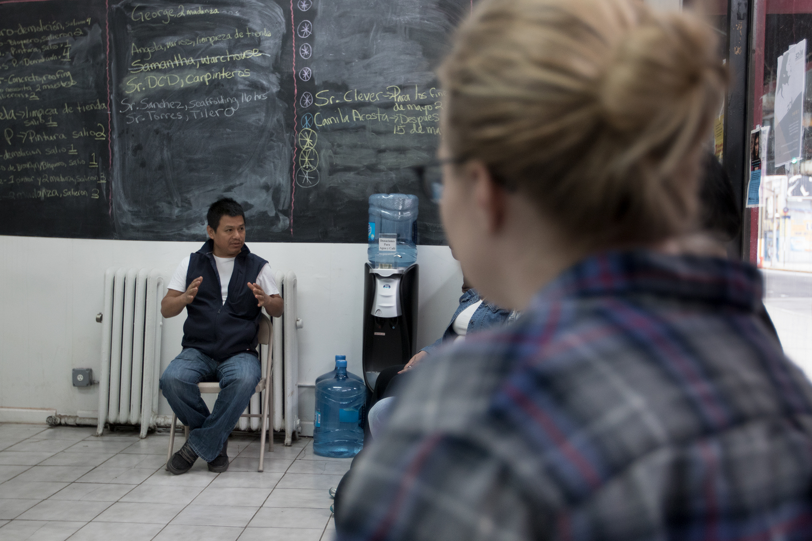
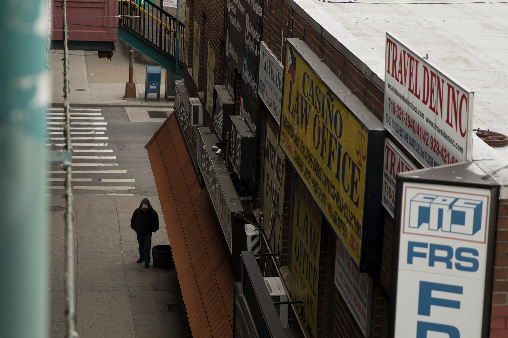

Para combatir el robo de salarios, algunos ven hacia la nube
Una organización de jornaleros trabaja para combatir el robo de salarios a través de internet, pero solucionar el problema llevará mucho más que solo un click en un smartphone.
Por: GERARDO DEL VALLE Y JOAQUÍN TORRES
Sobre la acera de la calle 69 y Roosevelt, en Queens, cerca de treinta hombres se encuentran dispersos. Se reúnen en grupos de dos o tres, hablan poco entre ellos. Ocasionalmente pasa un carro -un pickup, una van o una suburban grande- bajando el paso. El carro funciona como el pitido del árbitro en un partido de fútbol: Los hombres se realinean, acercándose -tentativamente-. Cuando baja la ventana es claro que el partido ha comenzado. Cómo drive through de McDonalds, se puede conseguir quien te ayude con la mudanza, te repare tuberías, te construya un muro o te ayude a soldar un portón a $100 dólares el día.
Varios de estos hombres terminan siendo escogidos y suben a los automóviles confiando en que regresarán al final del día con billetes en la bolsa. Esto parecería un día ideal para un jornalero, sin embargo, el panorama podría tornarse distinto para algunos de ellos. Algunos de estos trabajadores que se atreven a embarcarse en la travesía de subir a solas al carro de un completo desconocido para buscar chamba, concluyen su jornada sin paga de por medio, siendo estafados. De acuerdo a un estudio publicado por la Universidad de Illinois, UCLA y The National Employment Law Project, cada semana se vive un robo de sueldos de 56.4 millones de dólares a jornaleros de Nueva York, Chicago y Los Angeles, conjuntamente.
Pero incluso, para algunos jornaleros, el resultado es peor. Manuel Solano, 37, es un ejemplo de esto. En medio de las oficinas de la ONG New Immigrant Community Empowerment (NICE), ubicada a unas cuadras de la 69 y Roosevelt, Solano nos cuenta de su secuestro. ¨Volví de México en 2013, allá apenas si me ganaba 200 pesos (11 dólares) lavando coches. Cuando llegué de este lado fui secuestrado¨.
Manuel consiguió un trabajo en Houston, Texas días después de haber cruzado la frontera. El supuesto contratista le había prometido pagar 120 dólares el día por limpiar un establo. ¨Cuando me subo a la troca me dicen, vamos a pasar a un departamento. Cuando llego a ese departamento había como 30 gentes sólo con ropa interior. Me dicen: quítate los zapatos y la ropa y quedate en silencio, y ya me los quité.¨ Desde ese momento, empezaron a llamar a los familiares de Manuel y a pedirles dinero, ¨me pedían que 700, y luego 200 (dólares) y así se iban.¨
Manuel es originario del estado de Guerrero en México. El Nahuatl que aprendió durante su infancia le sirvió para revelar información de su paradero a sus familiares sin que los secuestradores se dieran cuenta. Sin embargo, fue hasta después de dos semanas de cautiverio, que aprovechó un descuido para escaparse. Tras ganarse la confianza de quienes lo resguardaban, acompañó a uno de ellos a comprar comida,¨te voy a llevar a la tienda, no te vayas a pasar de listo, me dijo (el secuestrador).¨ Manuel se percató que después de que su secuestrador bajo de la camioneta, los seguros del vehículo no estaban puestos. Al ver tal descuido aprovechó para huir. ¨Llegué a donde estaba la parada del bus. El bus ya venía, me subo sin pagar y vámonos. Se jala el bus y no me siguió el muchacho, estaba ahí en la troca, yo lo ví.¨
El origen de jornalero App
Esta historia se unió a la de otros jornaleros que en 2013 se reunieron con artistas y activistas para buscar una solución a la vulnerabilidad y peligros que esta comunidad enfrenta. Entre talleres de oficios, obras de teatro de migrantes y mesas de diálogo, la artista argentina Sol Aramendi junto a miembros de NICE, escucharon a Manuel y pensaron en una aplicación de celular para solucionar el problema. ¨Un trabajador de la Unión dijo “¿Por qué no hacemos un app para reportar problemas de seguridad y salud?”, recordó Aramendi. Así surgió la idea de crear Jornalero App, una aplicación de intercomunicación y protección para esta comunidad. Tras el paso de las semanas y diversos talleres se decidió enfocar los esfuerzos de esta herramienta tecnológica únicamente al problema mayor en la comunidad, el robo de salarios. ¨Ellos dijeron: Nuestra máxima preocupación es el robo de salario, en este momento es rampante,¨ comenta Aramendi. Sin embargo, a futuro la app podría ampliar sus alcances para lograr todos sus propósitos que la inspiraron. ¨Una idea que la gente está dando ahora es cómo hacer la aplicación no sólo aplicable a casos de robo de salario, sino si también vienen redadas en la parada, si ven a ICE, o este tipo de alertas que van más allá de este asunto laboral¨, comenta Charlie Uruchima, dirigente de NICE.
El proyecto resonó de costa a costa, atrayendo la atención de la organización National Day Laborer Organizing Network (NDLON), coordinadora de 50 organizaciones que trabajan con jornaleros a nivel nacional. Ellos, con el apoyo de una asociación de pintores aportaron alrededor de veinte mil dólares para desarrollar la aplicación. ¨Nos dimos cuenta que los jornaleros eran defraudados en sus wages (salarios), pero también de la misma inseguridad que produce que estén sólos en esta travesía. Por eso una aplicación los puede ayudar a documentar sus injusticias y a estar comunicados entre ellos,¨ comenta Cal Soto, Coordinador de los derechos laborales en NDLON.
Después de NDLON se sumó el centro de trabajadores de Cornell University y después de eso, A Blade of Grass, una organización que promueve el arte con enfoque social otorgándole un Fellowship a Aramendi para continuar con el desarrollo de la aplicación. “La manera que el arte comprometido socialmente funciona es que existe un proceso de creación de relaciones¨, comenta Elizabeth Grady, Directora de Programas de la organización.
Cuando el arte se mezcla con la tecnología
En un estudio pequeño de Long Island City, mientras trabaja en unos posters para niños que se exhibirán en el Museo del Barrio, Sol Aramendi recuerda los primeros pasos de Jornalero App. “Esta aplicación tenía como premisa central el concepto de desarrollo junto con jornaleros, y son realmente las personas que contribuyeron a co-crear esta aplicación que experimentaron el arte más directamente”. Aramendi no es una diseñadora de apps, sino una artista. Esto ha marcado la tendencia visual de la aplicación, pero también sentó la duda de su funcionalidad. Dos años fueron necesarios para concebirla y desarrollarla, y poco más de siete meses lleva en fase beta. Actualmente es probada por 30 usuarios seleccionados.
“Es un proceso efectivo de desarrollar aplicaciones que las personas necesiten. Es largo, intensivo de trabajo y es muy difícil de hacerse bien”, dice Sasha Costanza-Chock, investigador del Civic Media Center del MIT. ¨Por ejemplo, CoFounded trabajó con el Centro para los derechos de los migrantes de Los Ángeles para desarrollar Contratados, qué es un tipo de Yelp para que migrantes reporten a empleadores, pero va mucho más allá de la plataforma digital¨.
“A nosotros nos enorgullece muchísimo que la idea haya salido de aquí y que podamos ser nosotros quien la probamos” comenta Omar Trinidad, un jornalero que coordina a los trabajadores dentro de NICE. “Es bonito porque sabemos que estamos ayudando a hacer algo para combatir el robo de salarios. Hemos visto que los compañeros están más despiertos, ya no los amenazan tan constantemente, y eso es qué sigue en prueba.”
La aplicación actualmente consiste de tres menús. La primera opción permite mandar alertas de robos. La segunda opción es una especie de calculadora y bitácora que permite registrar las horas trabajadas y el salario pactado. El tercero da la facilidad de reportar el tipo de trabajo realizado y guardar las placas del coche, direcciones, nombres y fotografías del lugar de trabajo.
NDLON se encargará de administrar el flujo de información y mantener los servidores centrales, mientras que las organizaciones locales atenderán los casos personalmente. ¨Cuando alguien manda una alerta de robo de salarios, yo les llamo y les digo, ven a hacer un registro formal de tu caso y de ahí vamos a ver cómo podemos proceder¨, comenta Uruchima.
El problema sigue en aumento
Es primero de mayo, el día del trabajo, un par de cuadras más arriba de la 69 en Queens. Alrededor de 16 jornaleros se reúnen a las 7.30 de la mañana en las oficinas de NICE. ¨Antes que nada buenos días y felicidades por el día del trabajo internacional. Hay que tener trabajo con dignidad, tenemos que buscar tener siempre trabajo con dignidad," comenta Eduardo Redwood, ex militar ecuatoriano y dirigente de NICE.
En un pizarrón se lee el orden de las actividades del día: Junta para conocer los derechos laborales de los jornaleros. Desayuno/convivio. Salida a la marcha. En otro pizarrón más grande está escrito que en el mes de abril 23 trabajos fueron ofertados a través de la organización, entre ellos predominan trabajos en demolición y limpieza.
En la sesión se habla del derecho al tiempo extra. Manuel Solano aprovecha para mencionar que hay empleadores que pagan con cheque las horas regulares, pero en efectivo las horas extras. ¨El tiempo regular te lo pagan bien, pero el extra no te lo remuneran como deberían,¨ comenta Solano. Eduardo Redwood interviene y aclara que ¨overtime es después de 40 horas (a la semana), a partir de ahí se debe pagar cada hora como salario y medio.¨
Sara, una voluntaria de NICE explica que ¨es preferible que paguen en cheque las horas extra, para poder tener un registro, pero ya es decisión de ustedes.¨ En ese contexto Sara aprovecha y promociona Jornalero App. ¨Para eso tenemos el app de Jornalero, para que la app y la info sean digitales y no se pierdan.¨
Mientras está discusión se lleva a cabo en NICE, en la 69 un mexicano de 43 años, Isaac Guerrero, es la muestra real de este problema. “La vez pasada me quedaron debiendo como 400 dólares por 3 días de trabajo”. Isaac siente que el panorama actual es diferente, en el último año le han robado por lo menos en 5 ocasiones diferentes. “La cosa se ha puesto peor en los últimos meses.¨
¨Este tipo de crisis va a aumentar, porque hay muchos trabajadores que no están ejercitando sus derechos por miedo a los cambios en el gobierno actual¨, comenta Victor Narro, investigador de UCLA Labor.
El conflicto se agudiza porque no siempre se logra recuperar el dinero por la falta de documentos o información que validen el suceso. ¨El año pasado pudimos recuperar 30 mil dólares en el robo de salarios, pero eso viene de 20 casos de los 120 que presentamos,¨ comenta Charlie Uruchima. Según Uruchima Jornalero App reduciría el número de casos que no se pudieran documentar adecuadamente para obtener el reembolso del robo. ¨La idea es que cuando un trabajador va de la parada o a trabajar podrían marcar su salida. La foto de la placa del coche, del mismo empleador, de la casa, documentar el trabajo que se está haciendo y lo que se le tiene que pagar.¨ Cal Soto apunta al mismo lugar ¨Lo que queremos es ayudar a los jornaleros a que tengan mayor facilidad y herramientas para documentar sus casos.¨

La tecnología, ¿la mejor arma para los jornaleros?
Con bombo y platillo, y ante la posibilidad de que está aplicación sea usada por cerca de jornaleros miembros de 300 organizaciones alrededor del país, se anunció que en junio se hará el lanzamiento oficial al público de la aplicación. La idea de Jornalero App, de origen parece acertada, porque ataca un problema muy real. Según estudios publicados por la Universidad de Cornell, el 50% de los jornaleros ha experimentado alguna vez un robo de salario. ¨Hoy en día uno va a una esquina de jornaleros, o a un centro de jornaleros y todos los jornaleros tienen cell phones¨. comenta Victor Narro de la UCLA. Sin embargo, a diferencia de las aplicaciones convencionales, esta no está disponible al público en playstore o el app store de Mac. De hecho, para tener acceso a ella se necesita ser miembro de alguna organización laboral para que esta te proporcione los códigos de entrada. ¨Estamos haciendo todas esas medidas para que no sea tan accesible a ICE o a empleadores; a menos que hackeen nuestro sistema. No van a tener mayor acceso a la aplicación¨, comenta Charlie Uruchima dirigente de NICE. El problema es que sólo uno de cada cinco jornaleros recurre a algún centro de trabajo, según estudios de la universidad de Cornell.
En la práctica, durante la reunión del día de trabajo en NICE, Manuel Solano, quien ha sufrido varios robos e incluso un secuestro, no tiene instalado Jornalero App en su teléfono. Otros miembros más la borraron porque no la utilizaban a menudo. De los 16 asistentes, sólo una persona nos pudo mostrar la aplicación. De hecho, Charlie Uruchima, dirigente de NICE, aún se encuentra escéptico respecto al éxito de esta tecnología. ¨No puedo pronosticar nada, todo depende del mismo trabajador, si lo utilizan. No sé si como en su estatus actual tendrá mayor éxito.¨
"Parte de la mayor dificultad con esta aplicación es la brecha digital. hay una generación de jóvenes, usualmente que crecieron en Estados Unidos, que están usando redes sociales muy activamente. Pero también hay personas de generaciones anteriores, que no la utilizan y prefieren formas de comunicación más tradicionales, como radio en español, televisión y prensa escrita en el movimiento de derechos migrantes."
-Sacha Costanza-Chock
“Facebook es facebook y es exitoso porque la gente está ahí, la gente lo usa. Si una aplicación nadie la usa, no sirve. Ese es el desafío mayor que enfrenta esta aplicación.” comenta María Figueroa, encargada de la prueba piloto.
Futuro incierto
De vuelta en la esquina de la 69 y Roosevelt Avenue, otro día inicia con el despuntar del alba. Algunos jornaleros esperan el llamado de trabajo mientras sacan celulares, otros fuman cigarros, otros leen la prensa. Carlos, de Ecuador, juega Candy Crush. “Está dura la cosa. Imagínese, le he jalado un día en dos semanas. Hace tres semanas tuve un trabajo pero sólo de una semana¨. Cuando cuestionamos a Carlos respecto a Jornalero App, no conoce nada al respecto. Como él, la mitad de los migrantes en la 69 escuchan de esta tecnología con sorpresa por primera vez. “Hace dos años estaba trabajando en una obra nueva en el Bronx y el patrón me quedó debiendo alrededor de 110 dólares” comenta Edgar de Guatemala. “Nunca había escuchado de esa aplicación, pero sí creo que la usaría”.
"Algunos trabajadores prefieren la inmediatez de grupos de whatsapp o facebook que tienen con otros connacionales a una interfaz nueva y desconocida. Otros tienen miedo en concentrar la información que utilizan en una aplicación.
Isaac Guerrero decide irse a casa tras no encontrar trabajo. Apesar de que él ha sido víctima del robo de salario, dice: “No conozco ni he escuchado del Jornalero App. Yo no uso mucho aplicaciones en mi teléfono, no creo que la usaría.”